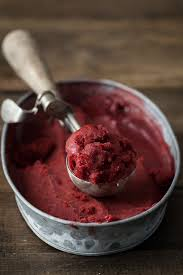

Blackberry Raspberry Sorbet

Refreshing Homemade Sorbet
Indulge in this delightful and refreshing Blackberry Raspberry Sorbet, perfect for cooling off on a warm day. This recipe combines the rich flavors of blackberries and raspberries into a smooth, icy treat.
Ingredients
- 3 cups fresh blackberries
- 1 cup fresh raspberries
- 1 1/2 cups water
- 3/4 cup superfine sugar
- 1/2 cup sour cream
- Juice of 1 lemon
- Zest of 1 lemon
Steps
- In a bowl, whisk together the sour cream, superfine sugar, lemon juice, and lemon zest until well combined.
- In a blender, combine the blackberries, raspberries, and the sour cream mixture. Blend until smooth.
- Add the water to the blender and blend again until the mixture is well combined and smooth.
- Pour the mixture through a fine-mesh sieve into a bowl to remove seeds and achieve a smoother texture.
- Transfer the strained mixture into an ice cream maker and freeze according to the manufacturer's instructions until it reaches a sorbet consistency.
- Once done, transfer the sorbet into a lidded container and freeze for an additional 2 hours to firm up.
- Serve scoops of the sorbet in bowls or cones and enjoy!
Home